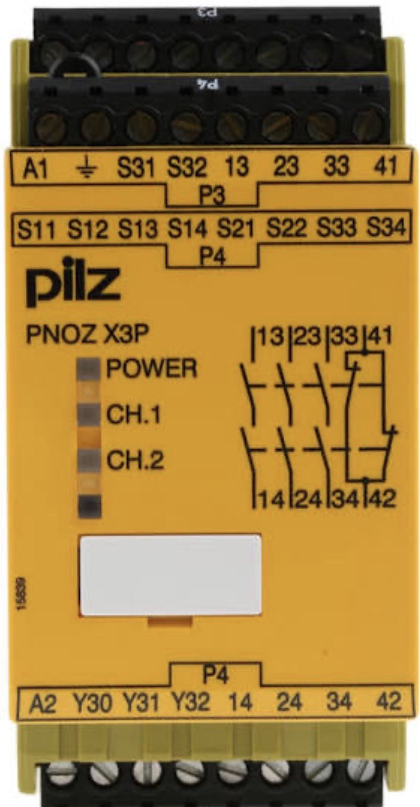

السيفتي PLC · الدرس 4 من 13
الـ PNOZ X3P من Pilz أشهر ريلاي أمان أصفر في المصانع. الفكرة نفسها في الـ RT9: يراقب طوارئ أو بوابة ويغلق تلامسات أمان، لكن لديه 3 تلامسات أمان NO وتلامس مساعد NC، ومصنّف PL e / Cat. 4 / SIL CL 3.

إذا كان مصباح POWER مطفأً فلا توجد تغذية أو هناك قصر. ومصباحا CH.1 وCH.2 يضيئان عند إغلاق تلامسات القناة.
كل توصيلة تكشف أعطالًا أكثر من سابقتها. قناة واحدة تكشف التسرب إلى الأرضي فقط. وقناتان تكشفان أيضًا التلامس الملتحم. وقناتان بكشف القصر تكشفان أيضًا القصر بين القناتين.
اختبره: أحدِث قصرًا بين S22 وS32، ويجب أن يفصل.
الأوتوماتيك على S13-S14: يعمل الريلاي بمجرد عودة الطوارئ. والمراقَب على S33-S34: ينتظر 300 ms، ويجب ضغط زر RESET مدة 30 ms على الأقل.
الفيدباك: NC من K5 وK6 على التوالي مع الريست. كونتاكتور ملتحم يعني لا ريست.
الاثنان يؤديان الوظيفة نفسها، والفرق في عدد التلامسات وأسماء الأطراف:
الاثنان بالمستوى نفسه: PL e / SIL 3.
اضغط الطوارئ أو افتح بابًا وشاهد أين ينقطع التيار، ثم أعد كل شيء واضغط RESET. أو اضغط «شاهد المثال».
أجب إجابة صحيحة عن 5 من 6 على الأقل ليُسجَّل الدرس مكتملًا.
الأرقام والأطراف هنا من كتالوجات ABB (Pluto Hardware Manual وProgramming Manual وRT9). قبل التطبيق على ماكينة حقيقية ارجع إلى الكتالوج وتقييم المخاطر الخاص بالماكينة. يُحفظ تقدّمك على هذا الجهاز فقط.
© LearnElectricals